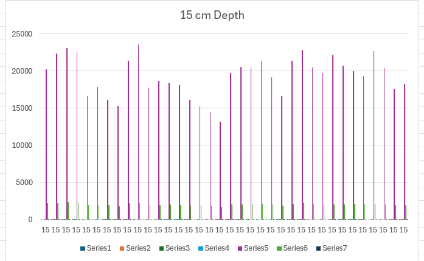

1 US Department of Agriculture - Diego Mendoza
1.1 Wednesday
1.1.1 Overview
-Work on new data set based on previous skills -observe changes on different visual graphs -Explain any patterns or observe points -Test test and test again
1.1.2 Attitude
** Background Information **
- No context was given for the data set
- 7 columns: rating, complaint, privileges, leaning, raises, critical, advance
- Rating attitude
1.1.3 Filtering
(How to Follow) -Use Condition Formating (In Home) -Highlight cells, equalt too or less than (58.5)
1.1.4 Observations
-Each column has at least 2 cells =<50 -Advance attitude perform poorly in an standard normal look(Bigger = Better) -Critical attitude excelling in an standard normal look(Bigger = Better) -
1.1.5 Filtering + Formulas
(How to Follow) -Select group of Cells, Rows or Columns -Use Condition Formating (In Home) -Highlight cells, duplicate
-Select group of Cells, Rows or Columns -Select Formulas -Use Average, Ma, Min
1.1.6 Observations
- 11 unique values that do not overlap/duplicated in another cell
- Highest value was Critical with 92, Complaint had the 2nd highest with 90, -> However that value appears to an outliar
-Minimum belongs to advance with 25 with privilege 2nd lowest with 30. -Critical with the highest average with 74.77 complaint 2nd highest with 66.59
1.1.7 Graphs
(How to Follow) -Select group of Cells, Rows or Columns -In the setting insert, select graph or recommend graph
1.1.8 Observations
- Bar graphs and pie graphs are not ver useful and do not provide any sort of information or trends
-The scatter plot is useful seeing where the cluster is and having a visual provided of where those values are in relation to each other ->Trends Complaints and learning has a postie correlation in related to rating. The higher the rating the higher the complaint attitude
-Statics chart helpful in showing where the concentration of the overall data is.
-Best graph that represent the data was Scatter plot, ->Easier to individual points and groups. ->Can apply basic functions, or understanding to see trends -> Overall seem that those with Combative attitudes excelled, those who were humble seemed to a had a positive trend and privileged posh attitudes performed worse than counterparts.
1.1.9 Summary
-Applied skills learned from Monday -Found trends patterns and made conclusions -Researched possible data sets and other techniques
1.2 Friday
1.2.1 Overview
-Cleaning and filtering data in relation to soil samples -Applying techniques learned from Monday and Wednesday to data set -Document all necessary actions for repeatable research -Find a story in the data
1.2.2 Data Information
-Data is from the USDA -Multiple different data sets that could be chosen ->Friday’s focuses on solid yield from 1984 - 1993 -Specific data can be found pressing the link Data from Tillage and cropping effects on soil quality indicators in the northern Great Plains
-The study provides insights into how soil properties respond to crop rotation and tillage practices under rainfed conditions in a semiarid continental climate
1.2.2.1 Column Name and Information
PLOT: Plot number, identifying the specific plot where the data was collected. REP: Replicate number, indicating the repetition of the experiment or sampling within the plot. ROTATION: Crop rotation system used in the experiment, typically represented by a code. -TILLAGE: Tillage treatment, also represented by a code (e.g., T1, T2). -DEPTH: Soil sampling depth (in cm). -SBD: Soil bulk density (g/cm³). -EC: Electrical conductivity (dS/m), a measure of soil salinity. -PH: Soil pH level. -NO3N: Nitrate nitrogen (mg/kg), an indicator of soil nitrogen content. -SOC: Soil organic carbon (mg/kg). -TN: Total nitrogen (mg/kg). -PMN: Potentially mineralizable nitrogen (mg/kg). -POMLF: Particulate organic matter light fraction (mg/kg). -POMSF: Particulate organic matter small fraction (mg/kg). -POMT: Total particulate organic matter (mg/kg). -POMSOM: Particulate organic matter as a percentage of soil organic matter. -MBC: Microbial biomass carbon (mg/kg). -MBN: Microbial biomass nitrogen (mg/kg)
1.2.3 Intial Observation
(How to Follow) -Select group of Cells, Rows or Columns -Select column with depth,(Step1) -select all 7.5cm (Step2) -shift arrow -> 4 rows (Step3) -In the setting insert, select graph or recommend graph(Step4) -For this we used a Column cluster(reccomended)
1.2.3.1 7.5 cm depth
1.2.3.2 15 cm depth
-Repeats steps, changing 7.5 to 15

1.2.3.3 30 cm depth
-Repeats steps, changing 7.5 to 30
1.2.4 observations
-On Graphs 2 & 3 seem to lacking a series 4 and both have high series 7 -On Graph 1 lacks series 5-7 and series
1.2.5 Focus + 2nd graph
-Focused on 2 columns ph and NO3N ->PH level and nitrogen.
-Highlighted each PH and NO3N for each respective depth -Selected graphs for each a line graph
1.2.5.1 Observations
-Depth seems to correlate to steadier levels in PH and N03N to 15cm -15cm depth seems to the best to hold consistent level in PH and N03N -7.5cm depth has the largest variance highest Max in NO3n -30cm depth had the lowest valley in NO3N
1.2.6 Formatting
-Highlight cells rule, less than value (6.25) -Highlighted each PH and NO3N for each respective depth
#### Observations
-30 + 15 cm depths’ nitrogen is below 6.25 cm -7.5cm depth’s PH is below 6.25
1.2.7 Summary
-Worked with team lead and Professor at data sets and possible ideas -Discussed what expectations were set and what documentation should look like -Worked on USDA data set -Applied skills and tools to dataset
1.2.8 Notes for next work
-Larger and more background information on a dataset is useful -Lacked comparsion test to 1984 data set -Extended research into subject provides a working platform -Large data sets become complicated to work with and see at once on excel